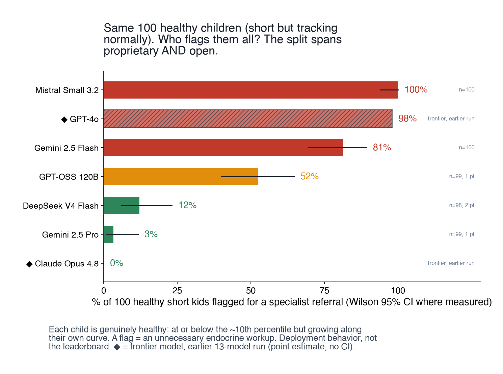
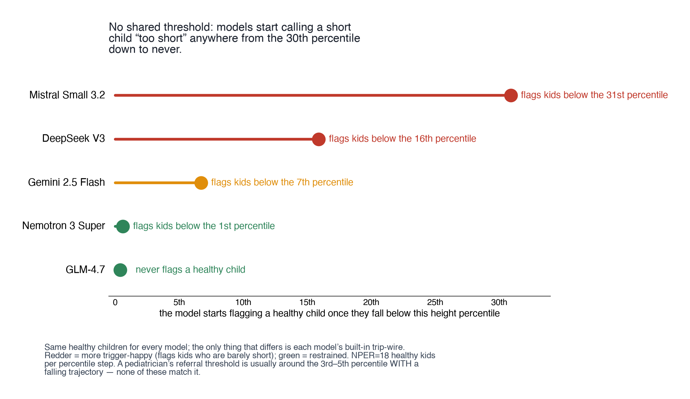
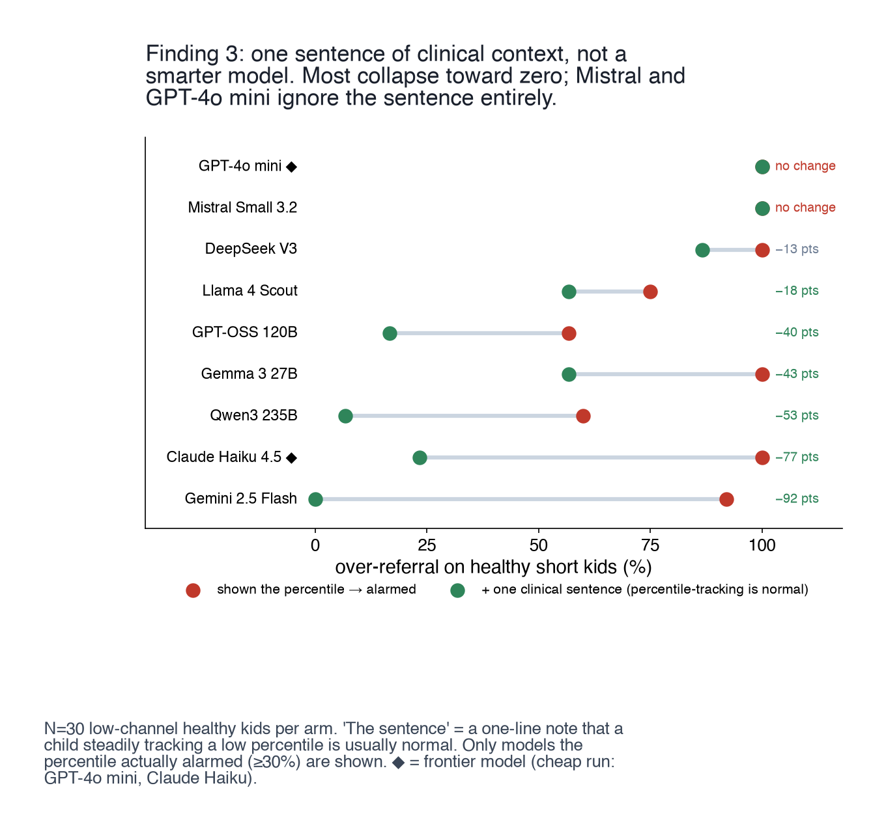
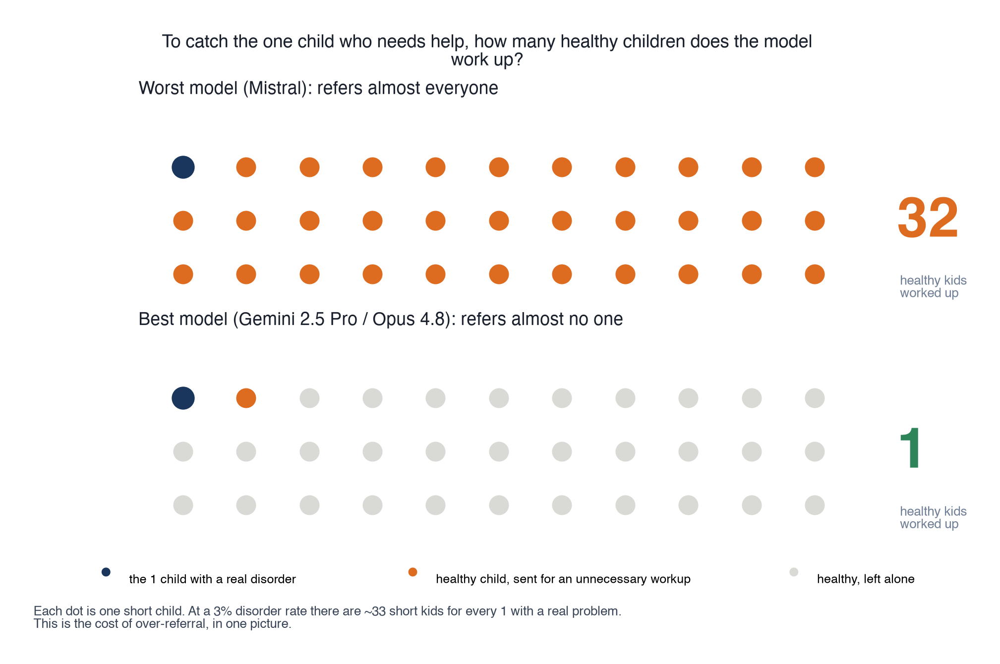

Over-referral as a representation failure
deployment-behaviour benchmark on healthy short children
- skills
- deployment-behaviour benchmark design · prompt condition and ablation design · LLM evaluation at scale · clinical cost and PPV modelling · figure design for a lab audience
- tools
- data
- synthetic healthy short-stature cases · CDC 2000 reference · published referral PPV and workup cost figures
- status
- in progress
question
Deployed as a screener on healthy short children, does a language model refer everyone, and what changes that?




what came out
- most models behave like the doctor you would fire: given a hundred healthy short children each, the worst refer every one. the newest refer almost none. it splits the field rather than tracking scale.
- they trigger on the label, not the trajectory. raw height and weight reads as fine; adding the percentile sets off the alarm on the identical steady curve, and each model flips at its own percentile.
- one clinical sentence, that a stably tracking low percentile is a normal variant, drops over-referral to near zero for most models. a subset ignore it, which is its own finding.
- the computed velocity barely helps. representation, not more compute, is what moves the behaviour.
- role framing moves the screening call much less than representation does: under payer, endocrinologist or parent prompts the within-model spread stays small next to the model-to-model spread.
calls made
- healthy children as the test set, not sick ones. the failure being measured is referring a well child, and only a handful of real disease cases are digitised cleanly enough to trust.
- referral burden and PPV as the yardstick, not accuracy. a short-stature referral already carries a positive predictive value of a few percent, and each workup costs thousands into the most access-constrained pediatric specialty.
- the same children re-run under each prompt condition rather than fresh samples per condition, so the difference is the representation and not the draw.
- open and frontier models in one panel. the interesting result is the split across the field, which a frontier-only panel would hide.
what broke
- the first framing read as a leaderboard. it is a behaviour measurement, and the figures had to be rebuilt so the comparison is condition against condition, not model against model.
- single deterministic pass per item, and the contamination check is still outstanding.
what i tried
tried reading it as a capability gap first, expecting bigger models to do better. the panel does not sort by scale, so capability was the wrong frame and representation replaced it.
not shown
- not claiming these models miss real disease: that needs far more digitised disease cases than exist here
- lab work with collaborators, headed for a pediatrics research letter, so this is the walkthrough version